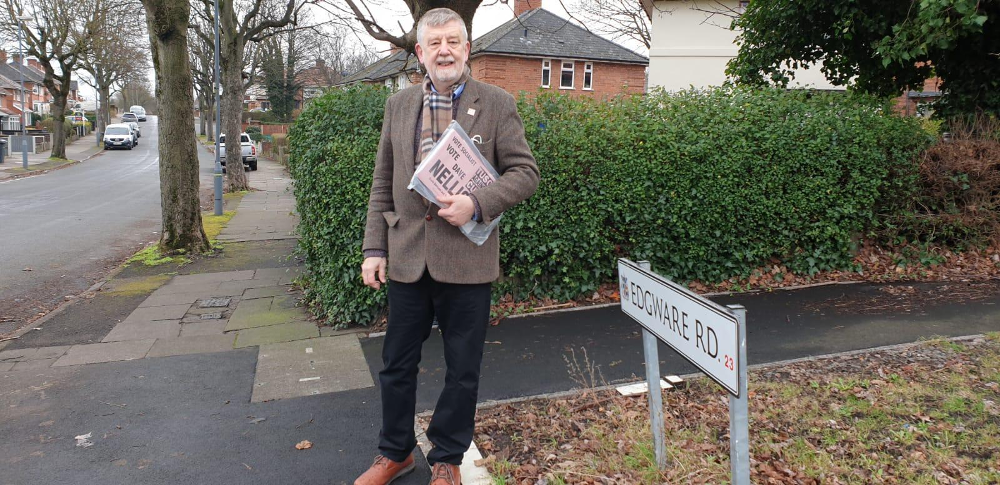
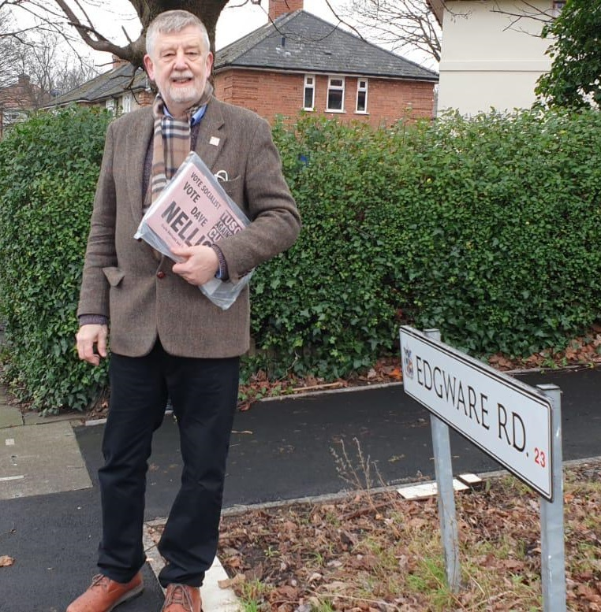

A message from Dave
Taken from his speech on the 12th February 2022 in Castle Vale
I'd like to tell you a bit about myself - We haven't got much time so, it won't be modest.
I have been a councillor for 18 years, an MP in Coventry for nine years, and I then worked at the Citizens Advice Bureau for 20 years, solving people's welfare rights, debt and housing problems.
So, it's unlikely that I haven't already dealt with the problems people bring to MPs - and I think I can do an excellent job for you.
In Parliament, I was one of the first MPs to bring in a private member's bill to establish a national minimum wage.
I won changes in the law to allow thousands of families with severely disabled babies Disability Living Allowance.
I fought for better rights in the workplace, including extending health and safety law to oil rigs and other offshore workers.
And I led the parliamentary opposition when 18 million people refused to pay the Poll Tax, which forced Margaret Thatcher's resignation in November 1990.
All whilst I was in opposition and in 1991, I was voted by journalists as the Backbencher of the Year.
But for opposing the Poll Tax and the imprisonment of pensioners who couldn't pay the poll tax, I was expelled from the Labour Party 30 years ago.
Expelled because I thought it was better to break that law than break the Poor.
And I'm not doing it for the money
MPs are currently on £82,000 a year - I think they're paid too much!
I think that when a new gas and electric bill drops on your doormat in April, and it's £700 more than you're paying at the moment, it will feel a lot different to working families in Castle Vale than an MP on three times the average wage of people in Birmingham!
MPs are insulated from day to day problems. They don't feel them as ordinary people do.
So, in the 1980s, when I was last an MP, my family and I took an average skilled factory wage in Coventry - less than half an MPs wage. The rest I donated to campaigns and strike funds and things that benefit local people and their communities. If elected next Thursday, I will do the same again.
But that's not the only reason I'm asking you to vote for me next Thursday.
I'm standing because if either of my main two opponents in this election were elected, it wouldn't make a bit of difference in working people's lives.
If the Tory candidate wins, Boris Johnson will still have an 80 seat majority in Parliament, and the Tories will carry on attacking working people.
If the Labour candidate were elected on 3rd March, it wouldn't make any fundamental difference - Just look at her main campaign promises:
- Regenerate our high streets
- Tackle crime and antisocial behaviour
- Crackdown on rogue landlords
- Bring in jobs and investment
All very important issues – but they are all things the Birmingham Labour Council should already be doing now!
And Paulette Hamilton, the Labour candidate, is paid £41,000 a year to be one of the leaders of Birmingham Council. If she's doing nothing to tackle those problems as a councillor - why would she be any different as an MP?
In fact, it's worse than that. On £41,000 a year, Paulette Hamilton was the Cabinet Member who tried to cut the hours and wages of the low paid, mainly women workers on Birmingham Council in the Home Care service.
We need someone who will fight to raise workers' wages, not cut them!
And we also need someone who would fight to save jobs - Birmingham Labour Council has had cuts from the Tory Government, but instead of fighting back, it has cut 13,000 jobs in the last ten years - which is why local services are getting worse.
And Labour hasn't been prepared to mount a fierce campaign to save the jobs we already have. They should have demanded, as I would do, the nationalisation of firms like GKN threatening to close factories and send jobs abroad.
The Tories have been forced to do that before - most recently with an engineering firm in Sheffield last October - and with a determined campaign, the government could be forced to save jobs like that again.
So we will fight for those things as and when they come up
I won't be a manager like my main two opponents in this election - who act as different wings of the same Establishment, but a shop steward who acts on behalf of working people and their families whether in workplaces or in local communities.
We need to send an independent voice to Parliament to challenge that Establishment and seriously fight for working-class people.
But we also need to send an MP who can face up to the big challenges that face all of us.
This country has changed in the last 50 years - as a small number of millionaires, now billionaires, at the top have persuaded politicians of all parties to rig the system in their favour.
When I was growing up in the 1950s and 60s, one skilled wage could buy you a house. Jane first bought a house at 21.
Young people today face house prices eight or ten times their annual wage - for many, it's impossible now to get a mortgage.
We need decent homes for all people – and mandatory control over landlords and rents.
In the 1960s, education was free. About 1500 young people from Erdington will go to university later this year and come back with debt three years later of £50,000.
We want to see the abolition of fees and loans, and a return to free education.
But half the 18-year-olds don't go to university.
With unemployment in Birmingham at 12.5% - 2.5 times the national average - it's also hard to get a job at a decent rate of pay.
Many young people will end up in insecure and temporary contracts, on a minimum wage on which you can barely exist.
We fight for a £15 an hour minimum wage and for services and industries to be reconstructed to give our young people a decent job and a stake in the future.
And it's not only young people who are facing a different world.
Working people are being hit with horrific price rises. Gas and electricity prices went up by £139 last October; they are due to go up by £700 in April; and there is a further price rise coming in October. That'll be £1000 in total.
In her fifth election promise, the Labour candidate says she is:
"backing Labour's plan for a cut in that bill of £200."
The Tories say they are more generous. They're offering £350, but £200 of that is a loan you will have to pay back!
Why should we pay any price rise? In the last ten years, big oil and gas companies have paid £200 billion in dividends to their shareholders.
These essential industries should be publicly owned and democratically controlled. And those profits should be used to cut people's bills and invest in a quicker move to clean, green energy.
And it's not just energy. Food is rocketing in price for many families, forcing a choice between food or fuel and increasing the use of food banks.
Some of those hardest hit will be our pensioners. Or those living on inadequate state benefits.
We have one of the worst rates of state retirement pension of almost any country in Europe.
The maximum currently in the UK is £180. It's £212 in the Netherlands. £254 in Germany and in Denmark, it's £360 a week!
If elected, I would fight for a 50% increase in pensions and benefits. So working people who are unable to work, or have gone past working age, can have a decent life.
To find the money for such an increase, we need to restructure the economy in a socialist direction.
We are the fifth richest country on the planet. When the banks crashed 14 years ago, the government found £400 billion to rescue them. They spent the same again supporting businesses during the pandemic.
Britain's 171 billionaires are worth over £500 billion.
It's not that we are short of money to change people's lives for the better - it's that the money isn't evenly shared in society.
It's in too few hands.
Our NHS needs investment - We were not prepared for this pandemic.
In January 2020, Britain had 4000 intensive care beds, while Germany had 27,000.
A decade of wage freezes in the public sector means we have 100,000 unfilled jobs in our hospitals, and nurses – nurses! - using food banks!
Six million people are on waiting lists and the Tory government wants to give more work to the private sector to reduce those lists.
We argue that the NHS should take over the private sector, pharmaceutical and medical equipment manufacturers, and run all of it for the public good - not for private profit.
Social care should be free and staffed by well-trained, properly paid people.
Prescriptions should be free in England - as they are in Scotland, Wales and Northern Ireland.
And by the way, the Tories are about to announce that everyone between the ages of 60 to 66 who currently do get free prescriptions will lose them!
When the Tories or Labour say "we can't afford all that…": decent homes, jobs on decent wages, bills we can afford
We say: We're not a poor country. We're a very wealthy country. But the wrong people have got the money.
We need to change society so that the wealth produced by working people is owned and controlled by them.
So that's why I'm standing in this election.
Without a socialist in the debates, the main establishment parties will just discuss how working people should pay for the crisis, in higher prices or fewer services.
Socialists demand that working people shouldn't pay for a crisis they haven't caused.
Many people are disillusioned with politicians - and I don't blame them
People feel nobody speaks for them.
"All politicians are the same"
"Once they get down to London, they forget about the people who sent them there"
"They're only in it for themselves"
So because of that, barely half the people in Erdington vote for any politician at a general election.
I'm not blaming them. They can't see anybody from any established party that will make any real difference in their lives.
I think we are different. We have radical socialist policies that could make a real change in people's lives.
We are not in it for the money - our public representatives only take the same wage as the people they represent.
But one new MP or one new councillor is only a first step.
We need you to get involved and help us in this election and the council elections in May. And to help us build a new party for working people rooted in the organisations and communities of the working class
I only make one more promise:
I won't let you down.
Thanks for listening.
 